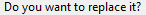

from sikuli import * import logging import myTools import compareOneReport # - - - - - - - - - - - - - - - - - - - - - - - - - # def Print_ARAgedBal(reportMonth): # - - - - - - - - - - - - - - - - - - - - - - - - - # myTools.sectionStartTimeStamp("print aged bal") logging.debug(' ') logging.debug('Print_ARAgedBal: ' + reportName) # make sure timeslips has focus myTools.getFocus() logging.debug('- open report') type("r",KeyModifier.ALT) type("b") time.sleep(1) # move to Print To and choose CSV myTools.pressSHIFTTAB(2) time.sleep(1) type("c") # print the report type(Key.ENTER) time.sleep(1) # make month number a string strMonth = str(reportMonth) # if month is under 10, prefix with 0 if reportMonth < 10: strMonth = "0" + strMonth # name report file: ex: ARAgedBal-03 reportName = "ARAgedBal-" + strMonth # fill in path and name; press ENTER type(Settings.repFolder + "\\" + reportName) time.sleep(1) type(Key.ENTER) if exists(): type(Key.ENTER) time.sleep(5) # compare the report with baseline compareOneReport.Compare_OneReport(reportName) type(Key.F4,KeyModifier.CTRL) time.sleep(1) myTools.sectionEndTimeStamp()